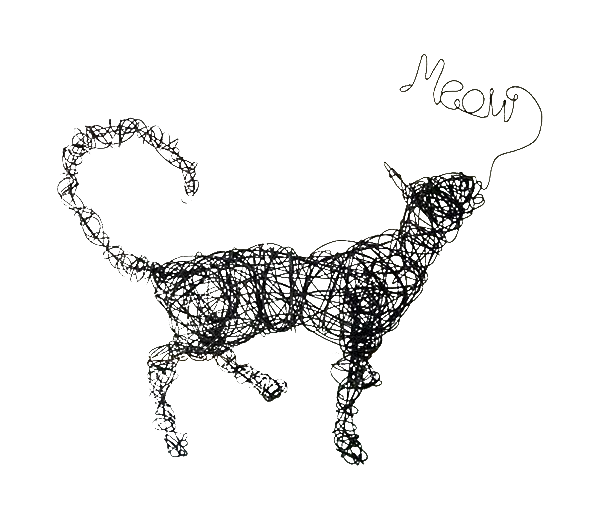

The first known writing relating to wire and its manufacture appears in the Bible (Exodus 39:3): “And gold leaf was hammered out and cut into threads . . . .” Round wire was probably made by cutting plates into narrow strips, which were then hammered and filed round. These wires were very short, and it was necessary to braze or hammer several pieces end to end to make substantial lengths.
For several centuries wire was drawn through metal dies by hand, in short lengths. The section to be drawn was hammered to a point so that it could be pushed through the hole in the die. The wiredrawer grasped it with his hands or with tongs and pulled it through the die, the amount of reduction being limited by the strength of the wiredrawer. Various means were used to augment his strength, such as seating him in a hanging chair so that by bracing his legs against the die-holding structure he could pull with his arms and push with his legs. Larger wire had to be made by hammering or rolling or both.
In the 19th century requirements for large tonnages and great lengths of steel and copper wire became acute, especially after the invention of wire rope, the development of the telegraph in the 1840s, and the invention of the telephone and barbed wire later in the century. These demands were met by the Bessemer and the open-hearth steelmaking processes and new machinery and methods of rolling rods.
Today

Wire nowadays is drawn from a hot-rolled section of steel called a rod. (Rods of some of the softer metals may be formed by extrusion or casting instead of rolling.) The rods are cleaned of scale (oxides that form on the surface) by immersion in dilute sulfuric acid. Other acids or a molten salt bath, such as of sodium hydride, may be used, as may mechanical scalers, depending on the material. Metallic grit blasting is sometimes used to clean spring wire. After acid cleaning, the metal is washed and immersed in a coating solution, such as a lime emulsion, borax, or phosphate, to neutralize any remaining acid and act as a lubricant in subsequent wire-drawing operations.
The wire-drawing process consists of pointing the rod, threading the pointed end through the die, and attaching the end to a drawing block as shown in the figure. The block, revolved by an electric motor, pulls the lubricated rod through the die, reducing it in diameter and increasing its length. For smaller sizes of wire, the reduction cannot be performed in a single draft, and a multiple-block machine is used, consisting of a number of single-block machines built together in one unit.
Sourced directly from:
“Wire.” Encyclopedia Britannica, www.britannica.com/technology/wire.